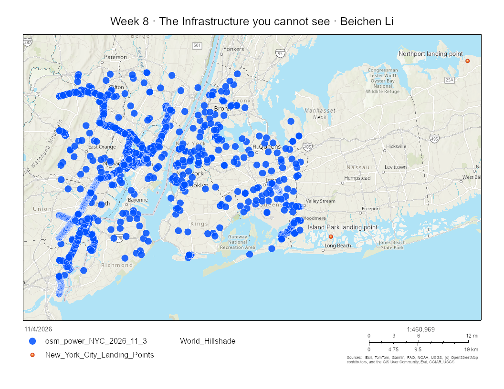

Week 08 · November 2026
The Infrastructure you cannot see
The question
I wanted to understand the digital infrastructure surrounding my New York City site: what digital and telecommunications infrastructure is nearby, which wider network the site might connect to, and whose jurisdiction governs the flows entering and leaving it?
The data
I used four sources, all accessed on 3 November 2026.
First, I accessed OpenStreetMap data through Overpass Turbo. The data was made by OpenStreetMap contributors and is licensed under the Open Database License (ODbL) 1.0. It could be republished on a public webpage provided that OpenStreetMap and its contributors are credited, the ODbL is identified, and any publicly distributed derivative database follows the share-alike requirement.
Second, I used Taginfo, OpenStreetMap’s tag-statistics service, to examine worldwide tag counts. Taginfo’s data is also licensed under the ODbL and could be publicly republished with the required OpenStreetMap attribution and licence notice.
Third, I consulted TeleGeography’s Submarine Cable Map, made by TeleGeography, to identify the Island Park and Northport cable landing points. References and screenshots of the map are available under CC BY-SA 4.0 when TeleGeography is credited, but the interactive map cannot be embedded and its underlying database is restricted to paying subscribers. I therefore manually transcribed and cited two publicly displayed coordinate pairs through Submarine Networks website rather than downloading or redistributing the database.
Finally, I referred to Data Center Map, made by Data Center Map ApS, to compare commercial data-centre listings near New York City. Its website terms do not provide a clear open-data licence or clear permission to reproduce its listings publicly. Therefore, the terms were unclear, so I linked to the source rather than reproducing its content.
Republication:
OpenStreetMap: The data is available under the Open Database License. I am “free to copy, distribute, transmit and adapt” it as long as I credit OpenStreetMap and its contributors. I may publish my map publicly with visible attribution and an ODbL link; any distributed derivative database must follow the share-alike requirement.
Overpass Turbo: Overpass returned OpenStreetMap data rather than a separately licensed infrastructure database. The exported response states that the included data is from OpenStreetMap and “is made available under ODbL.” I could republish the resulting map with the required OpenStreetMap attribution.
Taginfo: Taginfo states that “the data available through taginfo is licensed under ODbL, the same license as the OpenStreetMap data.” Its statistics may therefore be republished with OpenStreetMap attribution and identification of the ODbL.
TeleGeography Submarine Cable Map: TeleGeography’s Submarine Cable Map was used to identify Island Park and Northport as nearby landing locations. Their coordinate pairs were manually read from the individual station pages on Submarine Networks. I could not determine clear republication terms for Submarine Networks, so I linked to those pages and did not reproduce screenshots or its underlying database.
Data Center Map: I could not determine a clear open licence or clear permission to reproduce its listings on my public journal. The terms are unclear, so I linked rather than reproduced.
The method
The query: I ran the telecom query first: "[out:json][timeout:60]; nwr["telecom"]({{bbox}}); out center;" The predicate ["telecom"] selected every OpenStreetMap node, way or relation carrying the telecom key, regardless of its value. The extent {{bbox}} limited the query to the area visible on my Overpass Turbo map. In words, the extent covered New York City and nearby parts of northern New Jersey and western Long Island.
I then ran the following power query: "[out:json][timeout:60];(nwr["power"="substation"]({{bbox}}); nwr["power"="tower"]({{bbox}}););out center;" This query contained two predicates: ["power"="substation"] selected mapped substations, while ["power"="tower"] selected electricity transmission towers. The parentheses combined the two results. The extent was again the visible New York City metropolitan bounding box. Both queries were answered by https://overpass-api.de/api/ on 3 November 2026.
My telecom query returned 49 mapped objects, so telecommunications infrastructure was not entirely absent from OpenStreetMap. However, these results were OSM objects carrying a telecom tag, not 49 identified submarine-cable landing stations.
The evidence

What I found
Expectation: Two of my four predictions disagreed with the evidence. I correctly predicted that I could place a screenshot of TeleGeography’s Submarine Cable Map on my public journal page, although I had not anticipated that this permission applied only to a credited screenshot under CC BY-SA 4.0—not to embedding the interactive map or redistributing its underlying database. I also correctly predicted that I could publish an OpenStreetMap-derived map, provided that I credit OpenStreetMap and its contributors and identify the ODbL licence.
The results: Both of my numerical predictions were too high. I predicted that OpenStreetMap would contain 100 data centres in Shanghai, but the queries found four relevant records: two tagged telecom=data_center and two tagged building=data_center. I also predicted 1,000 cable landing stations worldwide, whereas Taginfo reported 60 objects tagged telecom=cable_landing_station when I checked it.
Main findings: My OpenStreetMap telecom query displayed 49 telecom-tagged objects, while adding building=data_center increased the displayed result to 51, meaning that two additional data-centre buildings were captured by that predicate. In contrast, the commercial Data Center Map lists 55 data centres in New York City, showing that the choice of dataset and classification method largely affects the amount of infrastructure indentified in the map. The power query returned 2,008 mapped substations and transmission towers, indicating a dense network across the New York City metropolitan extent. TeleGeography also identifies submarine-cable connections and the nearby Island Park and Northport landing points, although these two landing points are outside New York City adminstrative boundary.
The two absences, distinguished: My telecom query returned 49 OpenStreetMap objects. Of these, 48 had a name and only one telecom=data_center object was unnamed. The entries were primarily classified as telecom=data_center or telecom=exchange. Named examples included Equinix NY3, CoreSite NY3, Digital Realty New Jersey EWR20, Telehouse Teleport, AT&T, Comcast, Optimum, Spectrum and several Verizon exchanges. The detailed facility and operator names show that contributors often knew more than the general feature type; in many cases, they could identify the operator, address or individual data-centre facility. However, the unnamed data-centre entry shows that at least one contributor could identify the building’s function without knowing or recording its specific name or operator.
None of the 49 entries was explicitly tagged telecom=cable_landing_station. This absence does not prove that nearby cable landing facilities do not exist. TeleGeography identifies Island Park and Northport as cable landing locations. I can therefore conclude only that these facilities were absent from, differently tagged in, or outside the extent of my OpenStreetMap telecom results—not that the physical infrastructure itself is absent.
What this does not show
I am using OSM-mapped substations and transmission towers to stand for the electricity network that a data centre in New York City might connect to, and it might fail because OpenStreetMap is built and maintained by a global community of contributors whose knowledge, access and mapping priorities might vary substantially. As a result, visible features such as overhead towers may be recorded more completely than underground cables or restricted facilities. Overhead towers are relatively easy to identify, while underground cables, restricted facilities and privately operated infrastructure may be missing. The map therefore does not suggest which grid or substation would actually supply a particular data centre. Similarly, the 55 Data Centers captured by Data Center Map do not reveal what is inside each facility, its electricity demand, its ownership, or whose data it stores. None of these results was verified through fieldwork, and the database counts may change over time.